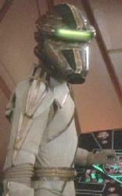

Breen |
|
|||||||
|  |
Specie con un avamposto nei pressi del Black Cluster investigato dall'Enterprise nel 2368.
Biologia
I Betazoidi non possono leggere le
menti dei Breen. Fino al 2375 si
riteneva che il mondo natale dei Breen fosse completamente ghiacciato e che i
Breen fossero privi di sangue per questo motivo (The
Changing Face of Evil).
Civiltà
I Breen sono politicamente non allineati ed erano stati considerati in un primo
tempo i colpevoli della distruzione della
Vico nei pressi del
Black Cluster. Tra i Breen è comune che le donne restino incinte ad una giovane
età. Durante il Secondo Impero Klingon, l'Imperatore
Mow'ga, inviò una flotta di navi per conquistare il pianeta natale dei Breen.
Della flotta di navi non si è più avuta notizia. I
Romulani hanno un detto: «Non volgere mai le spalle ad un Breen» (By
Inferno's Light).
Tecnologia
I Breen utilizzano un
particolare sistema di occultamento e le
loro navi sono equipaggiate con armi simili a quelle
klingon. Le astronavi dei Breen utilizzano una tecnologia che
fa uso di parti biologiche (Scorpion - Part I).